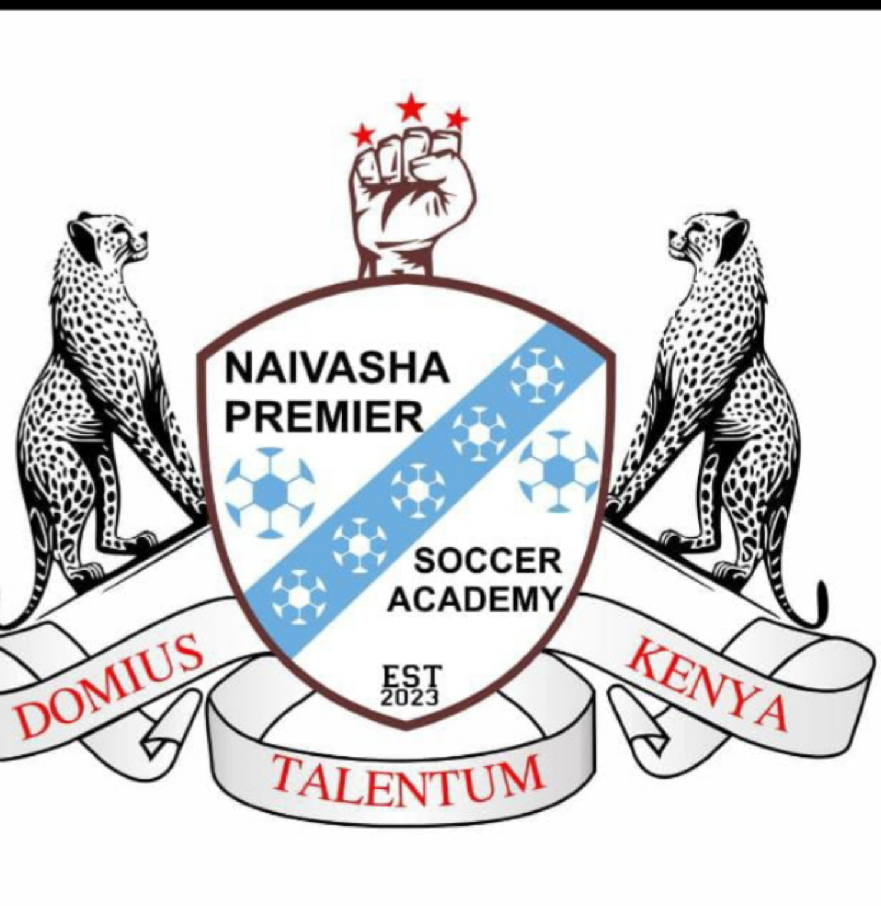
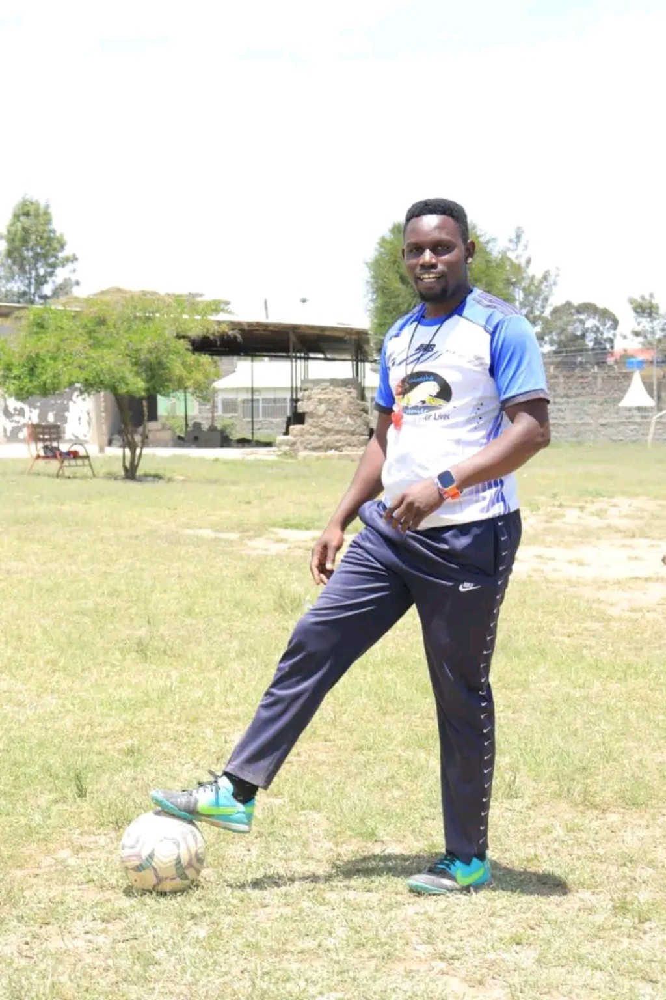
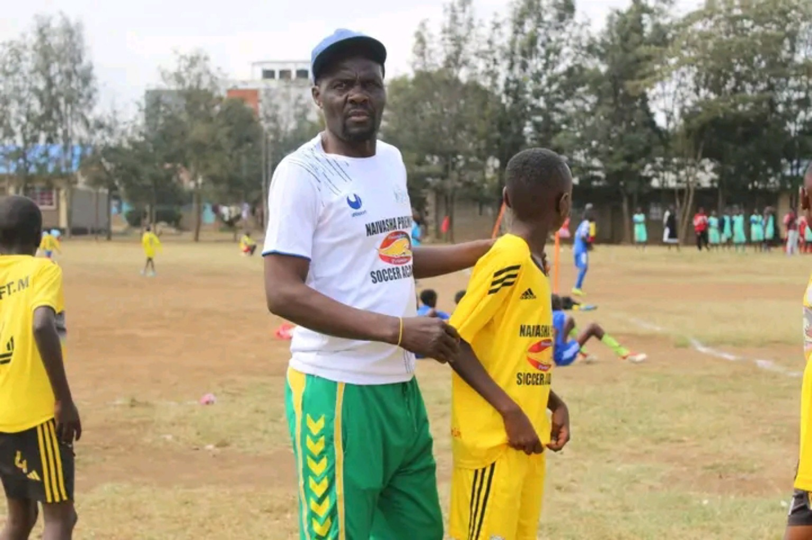
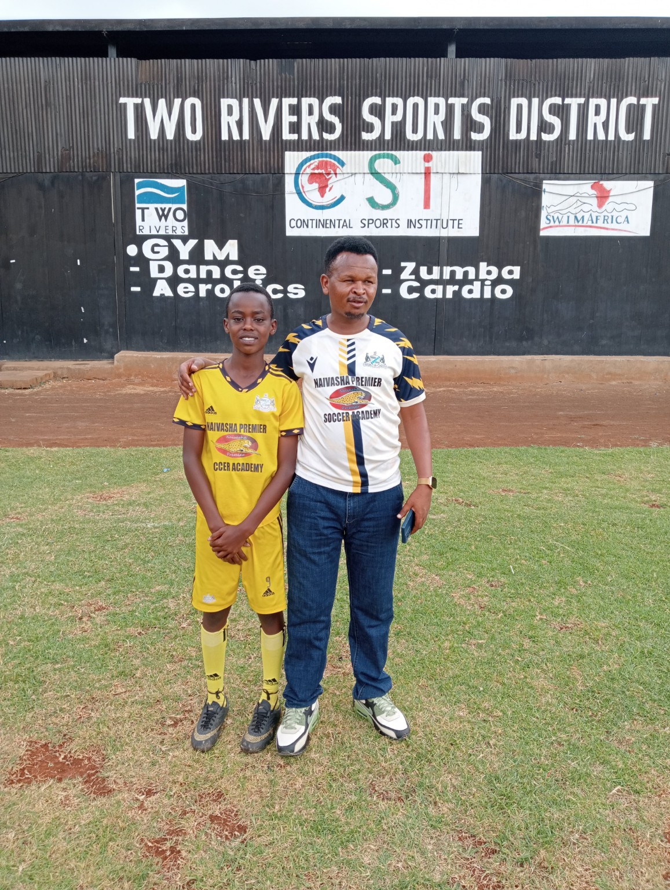

Under 7–9
Fun, movement, ball familiarity and the joy of playing.
FOUNDATIONS
NAIVASHA PREMIERSOCCER ACADEMYLEARN • PLAY • GROW
A positive football environment where young players can develop their skills, teamwork and love for the game.
WHO WE ARE
Naivasha Premier Soccer Academy is focused on helping young players enjoy football while developing strong foundations in technique, decision-making and teamwork.
We believe every player deserves encouragement, a safe learning environment and the opportunity to improve at their own pace.
Get in touch →FIND YOUR GROUP
Age-appropriate learning, from first touches to more advanced team play.
Fun, movement, ball familiarity and the joy of playing.
FOUNDATIONSBall control, passing, awareness and learning together.
DEVELOPMENTDecision-making, tactical understanding and team play.
PROGRESSIONGroup placement and training arrangements are confirmed by the academy. Contact the academy for current details.
THE NPFA APPROACH
We want players to grow on and off the pitch.
Build core football skills through age-appropriate practice.
Encourage fair play, discipline and positive communication.
Celebrate effort, progress and the value of working as a team.
MEET THE TEAM
Dedicated coaches supporting the development of young footballers at Naivasha Premier Soccer Academy.



MATCH CENTRE
Follow upcoming matches and completed games across NPFA age groups. Updates will be published here when fixtures are confirmed.
Fixture details may change. Please confirm match arrangements with the academy before travelling.
A SAFE PLACE TO PLAY
Player wellbeing, respectful coaching and parent or guardian involvement are important parts of youth football.
START A CONVERSATION
Ask about age groups, training arrangements and how to get involved.
Contact the academy
Call or WhatsApp the academy on either number:
Email and location details can be added when the academy is ready to publish them.